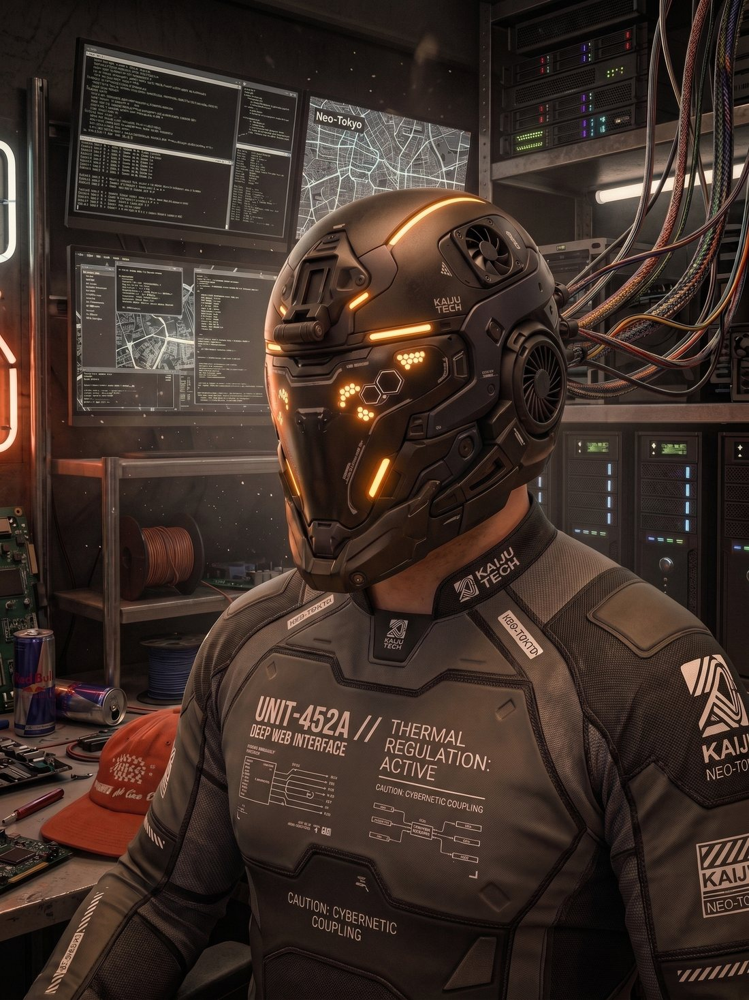

Kenneth
Jensen®

I design products, and I’ve also built and run them: co-founder and CPO of Golisto, sole builder of Tagga, and thirteen years across agencies and product teams before that.
I've designed digital products for thirteen years, mostly in Copenhagen, mostly for companies whose product was the interface: a car subscription platform, a screen-time app, a national team's media platform, a foraging guide. Since 2021 I've also been on the other side of the table as co-founder and CPO of Golisto, a collectibles marketplace, which is where I learned what my client recommendations cost to live with.
The work I'm hired for is judgement: which constraint matters, which option to drop, what to give up to ship. Screens are how that gets tested, which is why this site is built around the decisions and uses the screens as evidence.
I design the decision before I design the screen.
Constraints first, written down.
Before any design tool opens, a numbered list of what makes the problem hard, reviewed with the team. If the list is wrong, the design will be too.
Every decision names its alternative and its cost.
Decision records, not just designs. The rejected options stay in the file so the next person knows what was already tried.
Ugly early, in front of users.
Sketches and clickable greys go out before anything is polished. Polish spent on the wrong flow is the most expensive thing a design team does.
Systems over screens.
Tokens, components and the governance to keep them honest ship with the product. I work token-first and hand over a schema, not a picture.
Close to the build.
I stay in the repo, review the implementation, and take the blame for what ships, not for what was in the mockup.
The client side.
Head of UX and Design at Consid, a Nordic consultancy. I join client teams for three to twelve months, usually where a product has outgrown its first design and needs a system, a decision process, or both. Engagements to date span energy, mobility and public sector.
The owner side.
As CPO of Golisto I own product, design system and governance for a live marketplace with real sellers and real disputes. Tagga I build and run alone. Both are where I find out whether what I recommend to clients survives contact with a P&L.